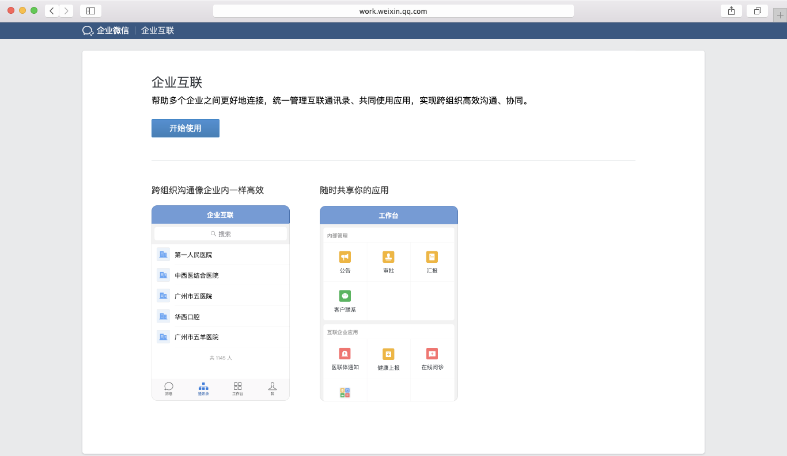
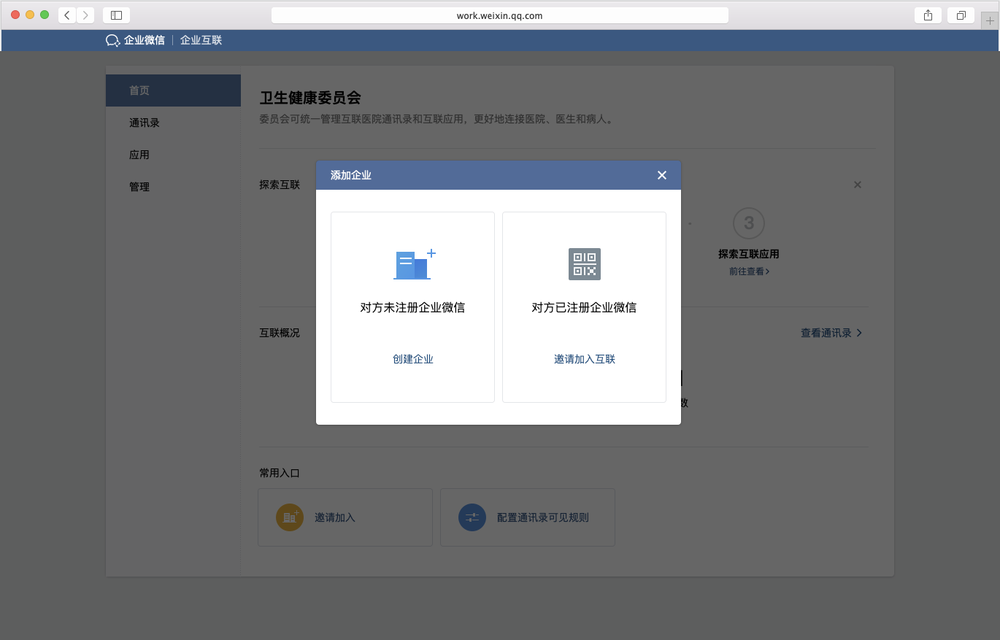
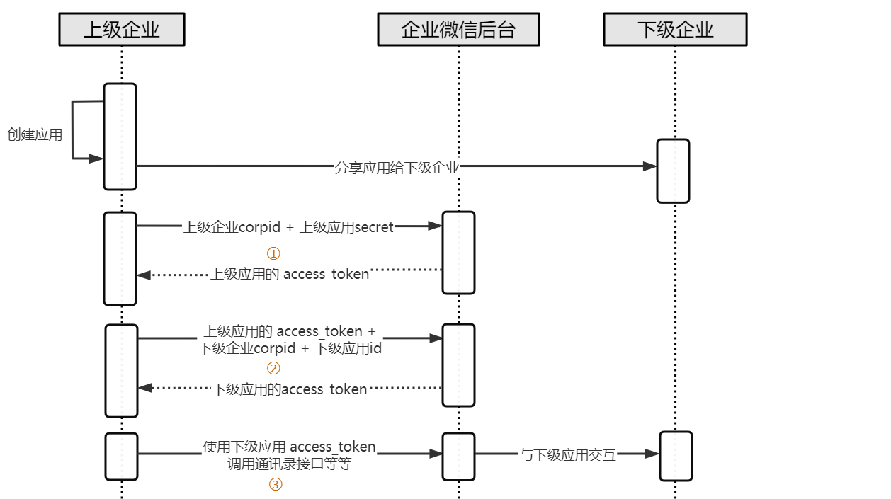
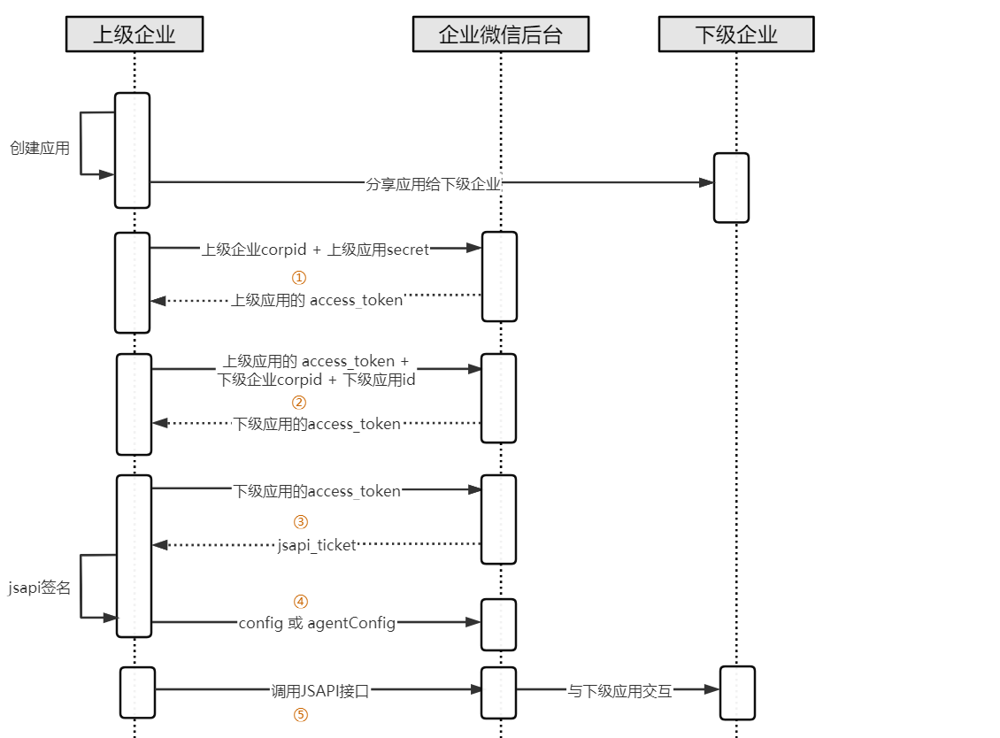
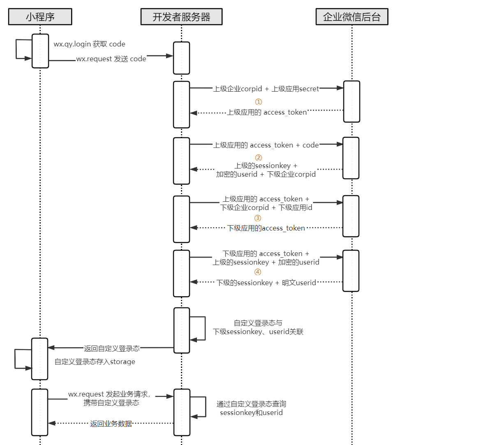

概述
最后更新：2022/01/11
目录
企业互联是什么
企业互联是企业微信提供的，针对多个企业主体间跨组织沟通、协同的解决方案。
使用此功能，可以连接多个企业的通讯录、实现跨企业高效沟通，还能随时共享应用。
怎么互联
1、有互联权限的企业在 Web 管理后台，点击右上角“企业互联”进入互联管理后台
2、在欢迎页点击“开始使用”按钮，系统自动创建一个互联

3、进入首页，点击“常用入口”-“邀请加入”，在弹窗中邀请企业加入互联

企业互联使用接口
上级企业将应用分享给下级企业后，需要使用特定的接口获取下级应用的身份和权限才能控制下级应用，因此需要做一定的适配。
对于第三方来说，当上级企业将第三方应用分享给下级企业后，企业微信会为每个下级企业分别安装授权该第三方应用，并回调授权通知给第三方，所以相当于是多了一种授权安装的渠道，不同的是，该情况下企业微信还会回调共享应用事件给第三方应用，之后第三方应用可获取应用共享信息，以及获取下级企业付费版本信息。
下面简要说明需要注意的地方。
获取应用共享信息
上级企业的管理员在管理端分享应用给下级企业后，会收到共享应用事件回调，此时上级企业需要通过接口获取应用共享信息获取分享后的下级企业的corpid和应用id列表并保存起来，后面调接口的时候需要用到。
获取当前使用者信息
因为应用可以分享给多个下级企业，所以上级企业调用接口前，需要得知当前使用者到底属于哪个企业。
见身份验证相关接口。与普通应用使用方法的不同点在于：
- 构造网页授权链接时，参数
appid填上级企业的corpid （第三方应用无变化，参见构造第三方应用oauth2链接） - 获取访问用户身份，对于企业互联，返回的UserId格式如：CorpId/userid，分解即可得到下级企业的corpid（第三方应用无变化，参见第三方获取访问用户身份）
使用API接口
- 第三方应用。不同点在于：获取企业永久授权码接口不返回安装的管理员信息。
- 自建应用。不同点在于：需要换取下级企业的access_token来调接口，实现与下级应用交互

① 获取上级企业access_token
② 获取下级企业access_token
③ 使用第②步骤得到的下级企业的access_token调用各种API接口。例如通过调用获取应用接口获取下级应用的可见范围，通过调用读取成员接口获取下级用户详情
使用JSAPI接口
- 第三方应用。无变化
- 自建应用。与普通企业使用JSAPI不同点在于：需要使用下级企业 jsapi_ticket 来进行jsapi签名，并用下级企业的身份调用agentConfig

① 获取上级企业access_token
② 获取下级企业的access_token
③ 获取jsapi_ticket并签名。特别注意，需要使用第②步骤得到的下级企业的access_token获取jsapi_ticket
④ agentConfig。特别注意，此时appId和agentId参数，需要填下级企业的corpid和应用id。
使用小程序接口
- 第三方应用。无变化，通过永久授权码获取企业access_token。
- 自建应用。与普通企业小程序登录流程的不同点在于：需要使用获取下级企业的小程序session来转为下级企业的登录session

① 获取上级企业access_token
② 获取上级sessionkey
③ 获取下级企业的互联access_token
④ 换取下级企业的sessionkey
处理企业互联的回调事件
对于企业互联的应用，因为应用统一由上级企业管理，所以相关事件和消息均回调给上级企业。需注意以下几点：
- 新增共享应用事件回调。当应用分享或解除分享后，会触发该事件给上级企业或第三方服务商。收到该事件后，需要调用获取应用共享信息更新应用的分享列表并存储
第三方应用共享应用事件回调。当上级企业管理员在管理端分享(或解除分享)应用给下级企业后（若需要敏感权限需下级企业确认），会推送该事件给服务商。
自建应用共享应用事件回调。当上级企业管理员在管理端分享(或解除分享)应用给下级企业后（若需要敏感权限需下级企业确认），会推送该事件给上级企业。 - 应用事件。第三方应用无变化；对于自建应用，所有下级企业的用户产生的应用事件，均回调给上级企业的回调URL，而事件里的企业信息是下级企业的信息。
例如成员关注及取消关注事件：<xml> <ToUserName><![CDATA[toUser]]></ToUserName> <FromUserName><![CDATA[UserID]]></FromUserName> <CreateTime>1348831860</CreateTime> <MsgType><![CDATA[event]]></MsgType> <Event><![CDATA[subscribe]]></Event> <AgentID>1</AgentID>点击复制
事件中ToUserName是下级企业corpid，FromUserName是下级企业的明文userid - 回调消息。第三方应用无变化；对于自建应用，所有下级企业的回调消息均推送给上级企业的回调URL，而消息里面的企业信息是下级企业的信息。
- 版本变更事件。对于付费购买的第三方应用，上级企业付费等行为产生应用版本变更后，所有下级企业均会产生版本变更事件给服务商